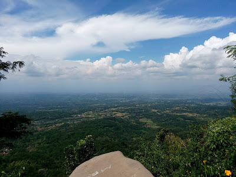
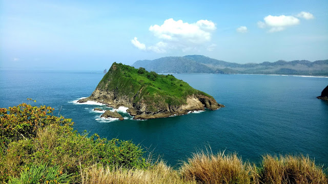
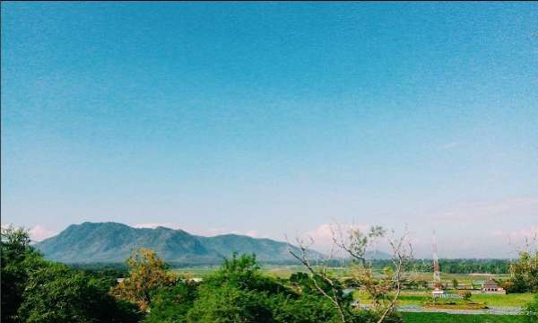
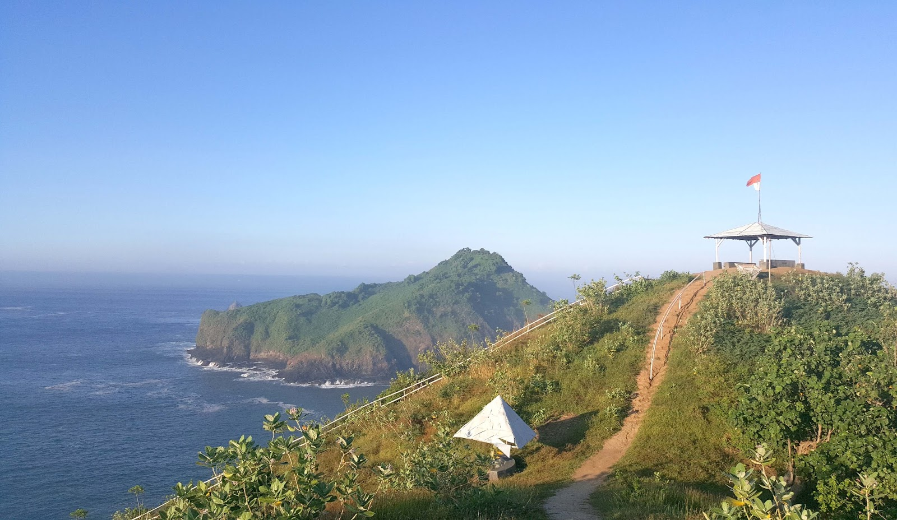

Bukit SJ88
Salah satu bukit yang lagi nge-hits dan digandrungi oleh arek lokal Jember adalah bukit SJ 88 atau Bukit Mentari. Bukit ini terletak di Terletak di Desa Sucopangepok,Kecamatan Jelbuk,Kabupaten Jember.
Bukit Saroyo
Bukit Suroyo merupakan salah satu jajaran bukit yang berlokasi di tepian pantai di Dusun Payangan, Desa Sumberejo, Ambulu, Jember. Menariknya,
Bukit Watu Pecah
Di kota Ambulu terdapat bukit bernama “Bukit Watu Pecah”.Dinamakan watu pecah dalam Bahasa Jawa (Bahasa Indonesia: batu pecah) karena di salah satu puncaknya terdapat batu besar yang terbelah dua. Bukit ini
Bukit Samboja
Bukit Samboja merupakan salah satu tempat wisata yang berlokasi di kota Jember, Jawa Timur. Bukit ini termasuk salah satu bukit yang terdapat di area pantai Payangan, di bagian selatan kota Jember dan bersebelahan dengan pantai Watu Ulo. Samboja merupakan
